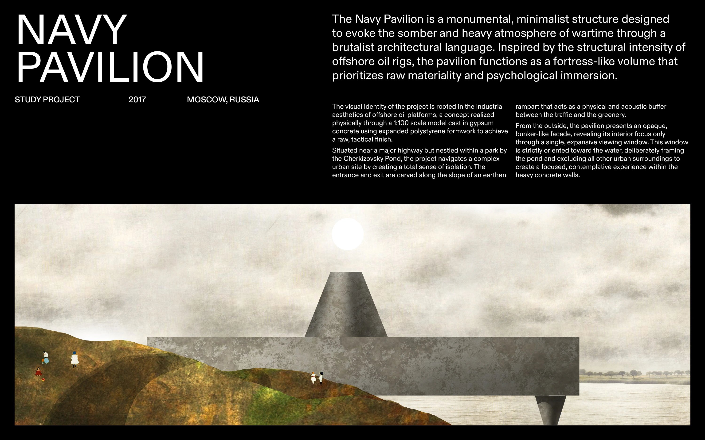
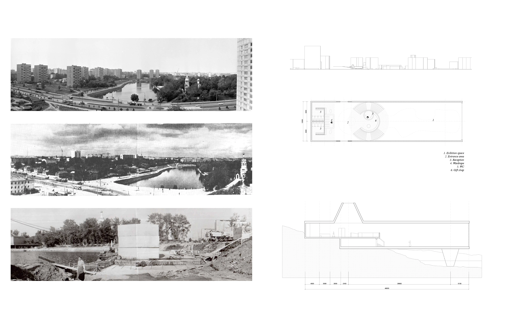
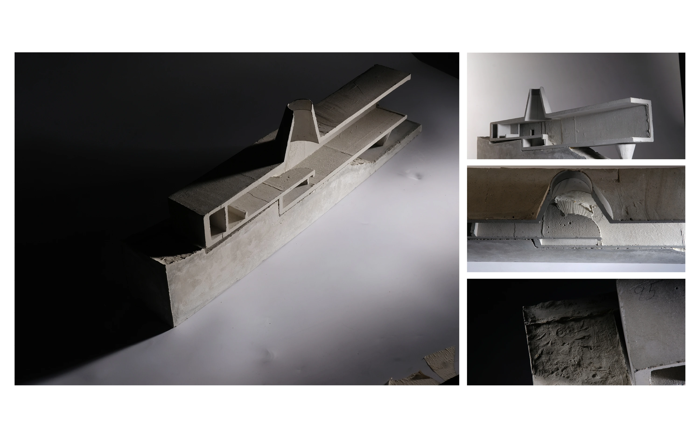

<body>
  <header class="project-header">
    <a class="back-link" href="../../">← Back</a>
  </header>

  <main class="project-page">
    <section class="project-images">
      
      
      
    </section>
  </main>
</body>
